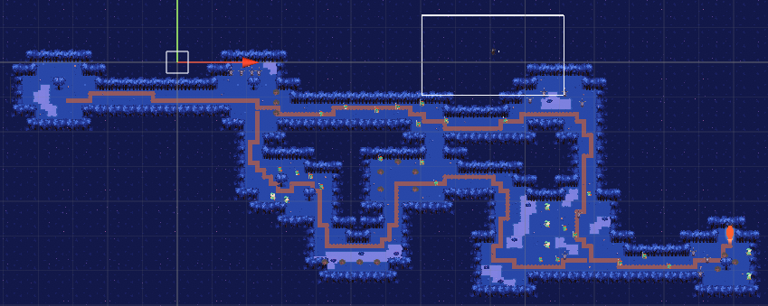
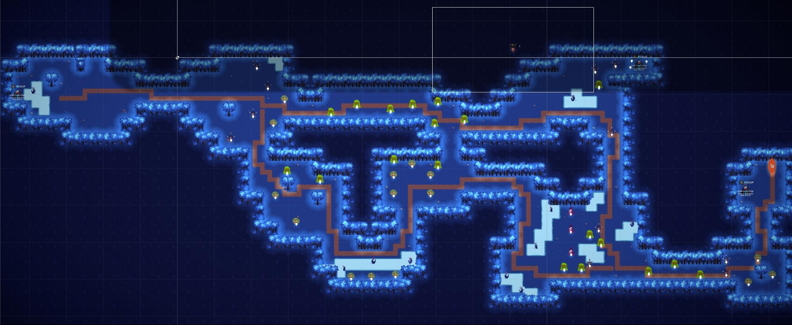

George Castle

About
Completed in one semester by around 30 University of Michigan students, Dreamwillow is a light hearted faux top down twin stick shooter about a necromancer resurrecting their foes to help them escape a dark forest.
Development Info
- Developed by WolverineSoft Studio
- 3 month development cycle (09/08/2019 - 12/08/2019)
- 30 developers
- Unity Engine
Contributions
Post-Mortem
Picking Your Leads
Morbi mattis mi consectetur tortor elementum, varius pellentesque velit convallis. Aenean tincidunt lectus auctor mauris maximus, ac scelerisque ipsum tempor. Duis vulputate ex et ex tincidunt, quis lacinia velit aliquet. Duis non efficitur nisi, id malesuada justo. Maecenas sagittis felis ac sagittis semper. Curabitur purus leo donec vel dolor at arcu tincidunt bibendum. Interdum et malesuada fames ac ante ipsum primis in faucibus. Fusce ut aliquet justo. Donec id neque ipsum. Integer eget ultricies odio. Nam vel ex a orci fringilla tincidunt. Aliquam eleifend ligula non velit accumsan cursus. Etiam ut gravida sapien.

What Went Right
- Jira Project Management Software allowed for transparency of who was working on what and how we were doing as a team
- Events-based programming allowed for abstract interfaces between code, audio, and animation
- Pod system established constant communication between different departments working on the same task

What Could Be Improved
- A lack of clear documentation guidelines and requirements led to decentralized and outdated documentation as the game grew
- Workflows evolved during production, meaning team members had to take time mid-development to learn new skills
- Lack of code reviews led to buggy code making it into production
- Small amount of time for pre-production meant many mechanics were not designed when programmers went to implement them

Lessons Learned
- Spend more time in pre-production. Don't leave any mechanics up for debate when assigning a task to programmers
- Look into using Confluence for more structured documentation
- Host more out of studio playtesting sessions
- Streamline workflows as much as possible for artists
- Clearly communicate any pivots to all team members
Contributions Breakdown
Wearing multiple hats
Being in a leadership role in a student led project means having to take on several roles. During the devlopment of Dreamwillow, I often had to juggle between these different roles and do my best to prioritize each task.
Character Art & Design
Early on in production, before we had settled on our Pod structure for teams, the art department was assignd various tasks. The first few being intended to help us narrow down a design for our main character.

Setting the Mood
Working off the early underworld theme the art team had settled on, I browsed pinterest, tumblr, and deviantart trying to find things that I felt best fit my vision for the game, and constructed a moodboard for what our main character might look like. The key things that stood out to me here were boots, a hood or hat to cover their head, and a dark / shadowy face.
It Builds Character
Working off of my moodboard, and the original underworld theme we were given, I created this character design. The tentacles were intended to allow for animations that were uncoupled from the player’s movement, and also to add to the creepy factor
Reeling It In

After all of the members of the art team pitched their designs for the main character, I was tasked with vectorizing another team member's design.
Finalizing the Design
Lead Animator
During my time as lead animator for WolverineSoft Studio, I had several respoinsibilites. From creating our asset workflow, to creating learning resources for other team members, to reviewing others' animations. Pictured below is a workshop I gave for general WolverineSoft members and studio animators to learn how to animate in Unity using the 2D Animation package.

Walking Around
One of the first things I rigged and animated for Dreamwillow was the player character, as they were the first finished sprite for the game. At first I had difficulty working within the constraints of the 2D Animation package and learning the workflow, but after animating the first view, I got the hang of it, and made quick work of the rest.
Idle Hands
Pictured to the right is the main character's idle animation I animated.


Polish Work
Finished rather late in the production cycle, I didn't have time to send the above enemy back to it's original animator to rework, and instead opted to polish the frames myself, adding in followthrough, anticipation, etc, to try and finish the product before the end of our last sprint.
Lead VFX Artist
During Dreamwillow's production, I was one of two artists tasked with creating particle systems, and of the two I was in charge.

Portals
Pictured to the left is a gif of the particle system I created for the level exit portal. Particles are spawned every few seconds with a long trail and a color that changes over time, and in the center of the portal is a force field that pulls nearby particles in, causing the cool orbiting effect. If I had had the time, I would have finished it off with a shader on the orange ellipse of the portal so it wasn't just a solid orange.

Souls
Pictured to the left is the soul (currency item) which is probably the art asset that took the most of my time to polish for Dreamwillow, as I wanted a wispy sort of flame object, but it had to keep it's cartoonish vector art look, while still being made with a particle system in Unity. It's made of two parts. The bottom half, which is an animated spinning orb, and the top, which is a particle system layered underneath the orb.

Summoning
Cras mattis ante fermentum, malesuada neque vitae, eleifend erat. Phasellus non pulvinar erat. Fusce tincidunt, nisl eget mattis egestas, purus ipsum consequat orci, sit amet lobortis lorem lacus in tellus. Sed ac elementum arcu. Quisque placerat auctor laoreet.
UI/UX Designer
Cras mattis ante fermentum, malesuada neque vitae, eleifend erat. Phasellus non pulvinar erat. Fusce tincidunt, nisl eget mattis egestas, purus ipsum consequat orci, sit amet lobortis lorem lacus in tellus. Sed ac elementum arcu. Quisque placerat auctor laoreet.

Just like Isaac
Cras mattis ante fermentum, malesuada neque vitae, eleifend erat. Phasellus non pulvinar erat. Fusce tincidunt, nisl eget mattis egestas, purus ipsum consequat orci, sit amet lobortis lorem lacus in tellus. Sed ac elementum arcu. Quisque placerat auctor laoreet.

Shifting Around
Cras mattis ante fermentum, malesuada neque vitae, eleifend erat. Phasellus non pulvinar erat. Fusce tincidunt, nisl eget mattis egestas, purus ipsum consequat orci, sit amet lobortis lorem lacus in tellus. Sed ac elementum arcu. Quisque placerat auctor laoreet.

Putting on the Mask
Cras mattis ante fermentum, malesuada neque vitae, eleifend erat. Phasellus non pulvinar erat. Fusce tincidunt, nisl eget mattis egestas, purus ipsum consequat orci, sit amet lobortis lorem lacus in tellus. Sed ac elementum arcu. Quisque placerat auctor laoreet.

Taking a Pause
Cras mattis ante fermentum, malesuada neque vitae, eleifend erat. Phasellus non pulvinar erat. Fusce tincidunt, nisl eget mattis egestas, purus ipsum consequat orci, sit amet lobortis lorem lacus in tellus. Sed ac elementum arcu. Quisque placerat auctor laoreet.
Level Designer
I was one of three level designers on Dreamwillow, tasked with creating the 3rd level and the final level out of the 6 levels in the final build of the game. This work mainly involved thinking up specific enemy encounters I wanted the player to experience, designing a room around that experience, and then trying to use each room to push the player down a certain path to the end of the level. Perfecting that flow ended up taking a lot more time than I had first realized, but through lots of playtesting, observation of players, and discussion with other level designers, I was able to refine my levels and create a better experience.
Level 3 - The Split Path
 Pictured above are screenshots of level three. This level was intended
to be a mid game challenge level, with fast moving enemies, and a difficult to reach
end that couldn't be ran to. The top is an early iteration, and the bottom is the
final design.
When iterating on the design, I added health pickups to give the player moments of
rest, removed a long empty hall at the begining to get the player into the action
quicker, moved enemies away from the first door in an attempt to help the door
problem, opened up some of the smaller rooms, and pushed the exit portal farther
back so it was more difficult to reach, as players had been able to duck through
enemies to reach it in the earlier version.
Level 6 - The Den


Pictured above are screenshots of level six. This level was intended
to be the final level, and therefore needed to be challenging, but not impossible, a
test of the player's skills thus far. The top is an early iteration, and the bottom
is the final design.
When iterating on this design, I added several health pickups to ensure the player
could reach the end, moved the exit so that the progression felt more natural, added
more enemies of different types into what became the final room and also moved the
currency pickups to be behind enemies in order to encourage clearing the final room.